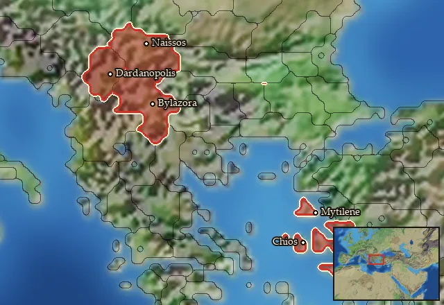

RTR: Imperium Surrectum
RTR: Imperium SurrectumRIS wiki › RIS Light › mercenaries
Ionia
Main campaignRIS Light
← all mercenary pools · wiki index
Mercenary pool: 8 units for hire in 7 regions.

Mercenaries
| Unit | Cost (dn) | Experience | At start | Most in pool | Added per turn | Who can hire | |
|---|---|---|---|---|---|---|---|
| Mercenary Prienian Hoplites | 3,885 | 0 | 1 | 1 | 0.066–0.133 | Any faction | |
| Mercenary Karian Light Infantry | 3,858 | 0 | 1 | 2 | 0.067–0.134 | Any faction | |
| Mercenary Milesian Hoplites | 4,334 | 2 | 1 | 1 | 0.079–0.158 | Any faction | |
| Mercenary Karian Heavy Infantry | 4,679 | 2 | 1 | 1 | 0.055–0.11 | Any faction | |
| Mercenary Lydian Akontistai | 3,310 | 0 | 1 | 1 | 0.104–0.208 | Any faction | |
| Mercenary Ionian Epibatai | 3,483 | 2 | 1 | 1 | 0.099–0.197 | Any faction | |
| Mercenary Thureophoroi Cavalry | 3,461 | 1 | 1 | 2 | 0.099–0.198 | Any faction | |
| Mercenary Xystophoroi | 3,935 | 2 | 1 | 1 | 0.087–0.175 | Any faction |
Regions (7)
Chios · Dardania · Ionia · Lesbos · Naissitania · Paionia · Samos